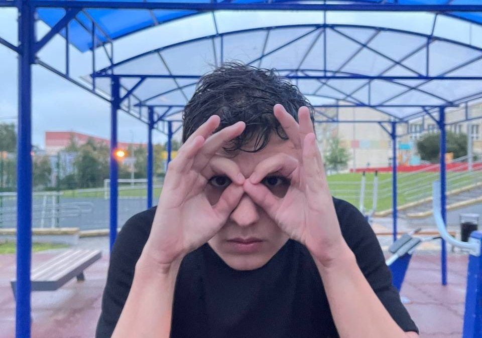

История
Вспомним возрождение
5 октября 2026 · Пресс-служба

В 2025 году команда возродилась после самого затяжного распада в истории — длительностью в год.
Первый матч был сыгран 10 августа с громкой афишей «Мы вернулись!» — и с громким подзатыльником от соперника: 4:7.
Легендарность состава выпирается за рамки — 5 на 5: Сеня, Палтор, Ларик, Айси, Моха. Айси оформил хет-трик, ещё один гол — автогол.